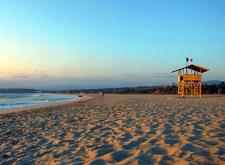
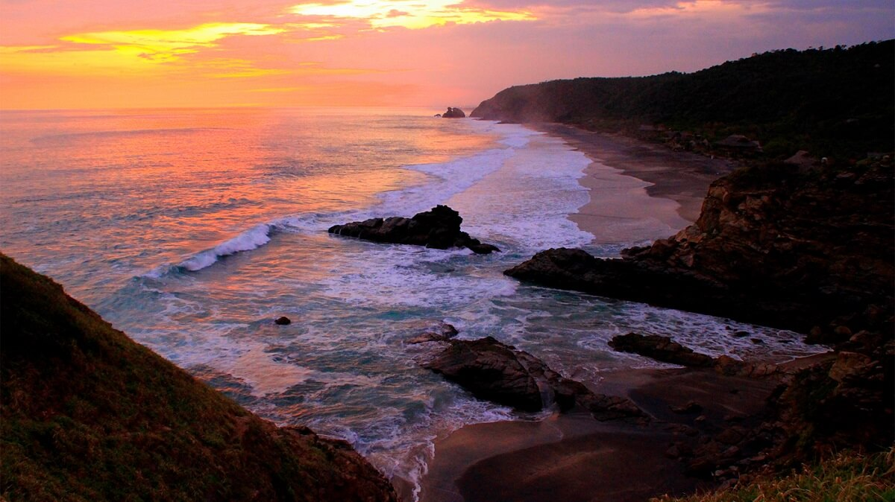
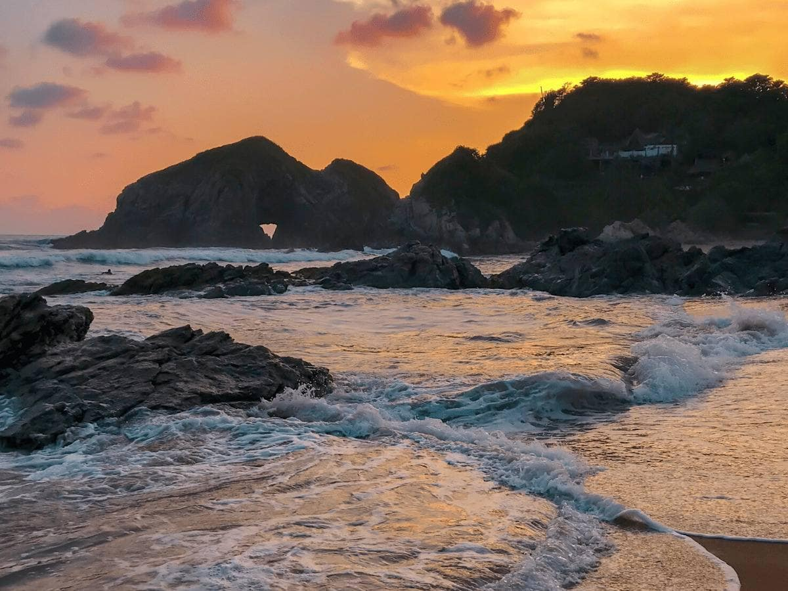

Playa Zicatela

Durante el mes de noviembre se realiza allí el torneo internacional de surf. Si deseas practicar este deporte, la Playa Zicatela de Oaxaca te resultará espectacular.
Si deseas visitar playas con menos oleaje, con mar más calmo en donde poder nadar sin temor a las olas, no te preocupes, hay muchas otras opciones entre las que podrás elegir.
Playa Zicatela es conocida por la hermosura de su fina arena y gris y su mar azul turquesa transparente, de aguas cálidas y, como ya te mencioné, de grandes olas.
Si piensas viajar en familia, con niños, quizás esta playa no sea la ideal. Pero si viajas solo o con otros adultos y deseas sentir la adrenalina del mar, entonces no puedes perdértela.
Playa Mazunte

Si eres un apasionado por la naturaleza y disfrutas de contemplar las mejores puestas de sol, tienes que ir a Playa Mazunte.
Al igual que Zicatela, en esta playa se forman grandes olas en sus aguas cálidas, por lo que no es ideal para nadar si no tienes mucho entrenamiento.
De todas maneras, esta playa es el mejor sitio de Oaxaca para contemplar el atardecer desde la cima de Punta Cometa.
También, si eres amante de los animales, aquí podrás contemplar cómo se cuidan y preservan a las tortugas golfinas, y hasta quizás, participar de actividades voluntarias en su liberación.
Playa Zipolite

En Playa Zipolite podrás disfrutar de un ambiente joven, fresco y descontracturado. Esta playa es conocida por el nudismo que podrás practicar.
Muchos de sus visitantes disfrutan de la naturaleza marítima desnudos, y tú también puedes hacerlo. Por supuesto, no es obligatorio, quienes desean estar con su traje de baño también pueden hacerlo.
Aquí se producen grandes olas, por lo que además de poder disfrutar del ambiente más hippie, también resulta ideal para practicar surf.
Puerto Ángel

Aguas calmas, turquesas y cristalinas te invitan a disfrutar de este pequeño puerto, en el que podrás nadar, bucear y descubrir su hermosa flora y fauna.
Durante la temporada alta encontrarás esta playa atiborrada de gente, pues es muy popular y pequeña, pero si viajas en temporada baja podrás disfrutar en soledad de este hermoso sitio de arena dorada y mar tranquilo.
El ambiente de Puerto Ángel es muy familiar, así que si vas a viajar con tu familia este lugar te resultará ideal.
Al ser una playa portuaria, en este sitio podrás saborear exquisitos platillos elaborados con pescados y mariscos frescos.
Playa Bacocho

Oleaje moderado, arena dorada y aguas verdes cristalinas son la marca personal de esta playa ideal para viajar en familia y para quienes se están iniciando en el surf.
Más allá de su belleza natural, en esta playa podrás disfrutar la proyección de películas al aire libre, de sus alojamientos en la cosa y de los sitios para comer deliciosos platillos.
El atardecer aquí resulta mágico, y compartirlo en familia hace que sea una experiencia única, y un recuerdo inolvidable.